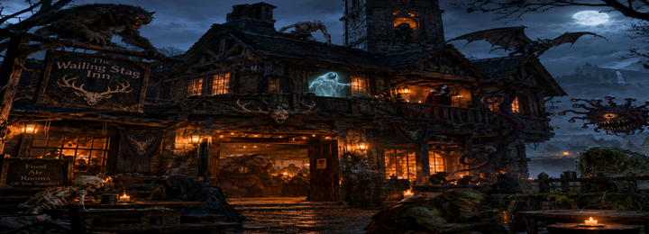

Welcome to the House of Nightmares!
Enter, if you dare, into a horror experience unlike any other. Each room is based off of a unique aspect of horror. We have rooms for clowns, spiders, zombies, skinwalkers, ghosts, and many more. If people fear it, we have a room for it.
Our rooms of abject horror come with all the basic ammenities of normal hotel rooms, including beds, wardrobes, bathrooms, a desk and a chair, lamps, and a television. WiFi is included. What sets our rooms apart is not just a visual aesthetic, but an ambient one as well. The furniture fits the theme of the room, the electricity flickers ominously, and speakers are built-in and well hidden in multiple areas to include sinister music and sounds that go bump in the night. These rooms are not just a place to stay for the night. They are an experience. We strive to induce fear and anxiety, and through it all a sense of wonder and excitement. Be warned, while our hotel welcomes guests of all ages, our goal is to scare you. Think carefully before bringing young children and those who do not enjoy being afraid. If you have any questions, please feel free to reach out and a staff member will be happy to answer them. We hope to see you soon.
Everyone has a nightmare.
- Midnight at the Circus - Clown room
- Spider's Lair - Spider room
- The Graveyard - Zombie room
- Secrets of the Forest - Skinwalker room
- Wails in the Night - Ghost room
All rooms contain the same ammenities. We strive to make all rooms equal in terms of comfort and necessities. We want guests to be able to focus on the story we are telling, the experience we are providing, not which room has the better bells and whistles. To that end, the only difference between rooms, besides the obvious asthetics and themes, will be to accomodate more or less guests. There will also be no WiFi. Guests are prohibited from taking pictures or videos during events in order to keep the immersion as well as the mystery intact for those who have not yet had a chance to experience our hotel. Pictures and videos will be allowed inside the rooms and are encouraged, as no guest will experience the same stay in the same room. We are always updating and changing the rooms, thus you never know what you're going to get.
Weekend Events
Special events are held every weekend on the inn grounds. Holiday weekends will have special events unique to the specific holiday and will be announced ahead of time. All other weekend events will be consistent.
